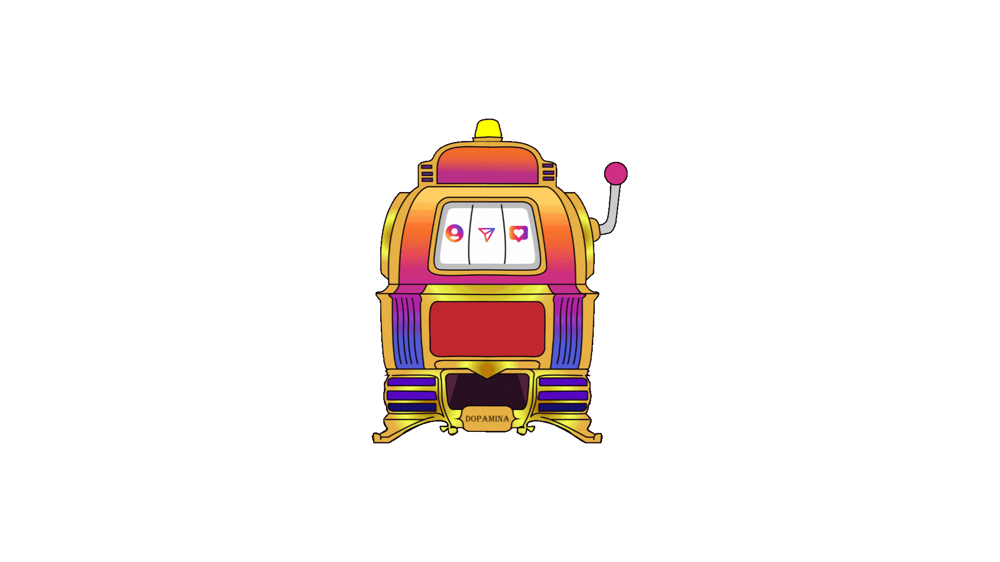
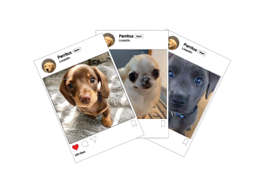

Instagram es como un casino, te mantiene enganchado con cada desliz, buscando la recompensa perfecta.
Para entenderlo hay que saber como funciona el juego ¡Y cómo podés salir ganando!
Estás en una mesa de blackjack y el crupier reparte cartas que parecen hechas para vos. ¿Cómo lo hace?
Para averiguarlo hay que jugar.
Ahora que viste como funciona, necesitás saber qué provoca esto en lxs usuarixs de la app.
Toca la palanca para continuar
Cuando deslizás para recorrer tu feed,
es como tirar una palanca.
Esperando la proxima recompensa.
Parece momento de dejar Instagram
por un rato, ¿Pero cómo?
¡Depende de tu caso!
Desinstalá Instagram,
por lo menos un tiempo
para evitar tentaciones.
Sacá las notificaciones. A
veces agarrás el telefono
para mirar una notificación
y se convierte en media
hora o más consumiendo
contenido.
Establecé un cronómetro
para limitar el tiempo que
pasás en Instagram.
Cuando el tiempo se acabe,
cerrá la app.
En lugar de participar
activamente, intentá ser
solo un usuarix pasivx
por un tiempo
No cargues el celular al lado
de la cama. Esto aumentará
la calidad del sueño y te
permitira descansar mejor.
Reemplazá el habito de verificar
constantemente el celular por otros
más saludables. Podes leer un
libro o escuchar música.